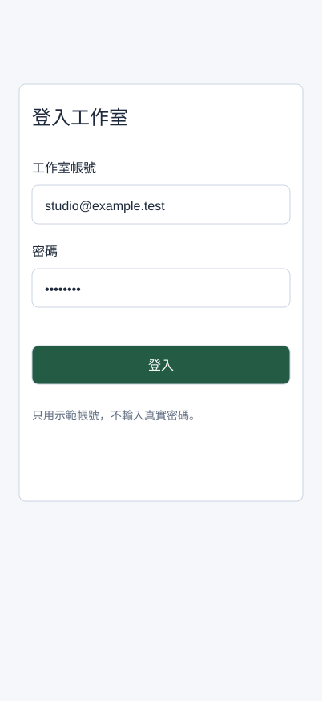

完成兩個欄位的登入表單與錯誤修正
現在把按鈕放進能讀懂、能修正的表單。你會建立帳號與密碼兩個欄位，各有標籤、輸入區、提示或錯誤，完成正常、錯誤、修正後三張畫面。這堂設計外觀與狀態，第10堂才連互動。
開始前，先找到材料與起點
先從Assets插入Button，確認能選Primary／Default並改Label。做不到時回第05堂；若缺手機Frame，用F新建402×874。下面會完整建立Field與Login / Content。
先開啟本堂起始材料（HTML），讀取輸入與圖層名稱；操作在你的 Figma 檔或本堂指定工具完成。完成後到本堂完成檢查表（可儲存／下載）記錄實際結果。
一個欄位不只是Rectangle
欄位至少要讓人知道「要填什麼」及「填錯怎麼改」。Label是固定標籤；Input是輸入區；Helper是提示或錯誤。Placeholder只是輸入區內的示意，不能取代Label，因為輸入後會消失。
| 欄位 | 正常內容 | 錯誤內容 | 修正後內容 |
|---|---|---|---|
| 帳號 | Label「工作室帳號」、值 studio@example.test、提示「請使用工作室電子郵件」 | 值 studio、錯誤「帳號格式不正確，請輸入完整電子郵件」 | 改為 studio@example.test，移除錯誤、恢復提示 |
| 密碼 | Label「密碼」、示意 ••••••••、提示「至少8個字元」 | 示意 •••、錯誤「密碼不足8個字元」 | 示意 ••••••••，恢復提示 |
| 登入按鈕 | Primary／Default | 仍可選Default讓人再次提交；示範未填齊另用Disabled | Primary／Default |
本課所有資料均為示範，不在Figma輸入真實密碼。Figma這些文字層不是可輸入的正式登入系統，無須假裝正在驗證帳密。
示範：建立第一個完整欄位
- 在
Screen / Login保留手機402×874及標題。建立Login / Content垂直Auto Layout，x24、y120、W354、Hug高、Gap20、無額外內距；放入標題「登入工作室」。舊的卡片測試移到手機外的Reference區，保留作比較。 - 建文字
Field / Label，內容「工作室帳號」，16／24；另建文字Field / Value，內容studio@example.test，16／24。 - 選Value按Shift+A，命名新框
Field / Input，水平內距16、垂直12、W354、H48、白底、1px#5F6C80外框、圓角8。Value寬Fill，文字保持單行示意。 - 建文字
Field / Helper，內容「請使用工作室電子郵件」，14／22，寬354、Auto height、次要灰色。 - 同時選Label、Input、Helper，按Shift+A命名
Field / Account，Vertical、Gap8、W354、Hug高。其子層寬都設Fill；Label與Helper文字Auto height。 - 將Field / Account放進Login / Content。短提示時欄位高度應為
24＋8＋48＋8＋22＝110；錯誤換成兩行時Helper高44，整個欄位會增加22，後面的密碼與按鈕往下排。
跟著做：第二個欄位與真正的按鈕
- 複製Field / Account為
Field / Password，改Label「密碼」、Value••••••••、Helper「至少8個字元」。不照抄帳號提示，要判斷三個子層各自用途。 - 將Password排到Account下方。從Assets插入Button，Hierarchy Primary、State Default、Label「登入」，命名Instance
Button / Login，W Fill、H48，放在Login / Content最後。 - 因為Login / Content有4個子項（標題、Account、Password、Button），Gap20應只出現3次。檢查長Helper不會擋住密碼欄或按鈕。
- 複製整張手機為
Screen / Login Error。依表格修改兩個Value／Helper，Input外框改Error紅，Helper改紅色。保持外框尺寸，不把一整張表單全部變紅。 - 再複製Error為
Screen / Login Corrected，把值改正、恢復一般外框與提示。來源畫面仍是正常／錯誤／修正後三張，不要覆蓋掉Error而失去比較。 - 建一張
Screen / Login Empty練習版，帳號／密碼放示意Placeholder，Button選Disabled，附近加「請先填寫帳號與密碼」。實際元件停用與提示原因需同時出現。

檢查表單時，看四個地方
先看Label是否保留；再看Value是否與欄位對應；接著看Helper能否指出問題及修正；最後看主按鈕是否可辨認。正常、Error與Corrected三版的閱讀順序都應為標題→帳號→密碼→登入。
修復路徑：如果長錯誤被裁切，先選Helper設文字Auto height／W Fill，再選Field外框Hug，再確認Login / Content為Vertical／Hug。若按鈕仍沒往下移，檢查它是否在同一Auto Layout裡。若手機高度不夠，先記錄內容超出的位置，保留正常字級；第13堂學滾動，不把字縮到10px硬塞。
下一堂新建List畫面與任務列。這堂只需要前堂Button family與本堂新建Field，不依賴尚未存在的List Top。
自己完成：改變條件再檢查
將帳號提示換成「請使用公司核發的完整電子郵件，若沒有帳號請先聯絡行政人員」，再把手機改360、Login / Content改W312。兩欄與按鈕寬Fill，長Helper應換行並推開後續內容。另挑一個欄位寫更有幫助的錯誤句。交出三個狀態與360版，說明哪個層決定每次高度變化。
完成條件與理解檢查
- 正常／錯誤／修正後三張畫面有帳號與密碼兩欄，Label、Input、Helper齊全。
- Button / Login來自Button元件，Label置中，Default與Disabled皆有文字與明確外觀。
- 長提示與360寬度下，欄位與按鈕不重疊；錯誤句有原因與修正方向。
想一想：錯誤版將Placeholder改成紅字，卻沒有固定Label與Helper，為什麼不夠？
展開參考答案與理由
使用者仍可能不知道欄位的正式名稱、出錯原因及修正方式。固定Label讓身分清楚，Helper提供具體回饋；顏色只輔助辨認。
本堂查證來源
來源查證：2026-10-09。